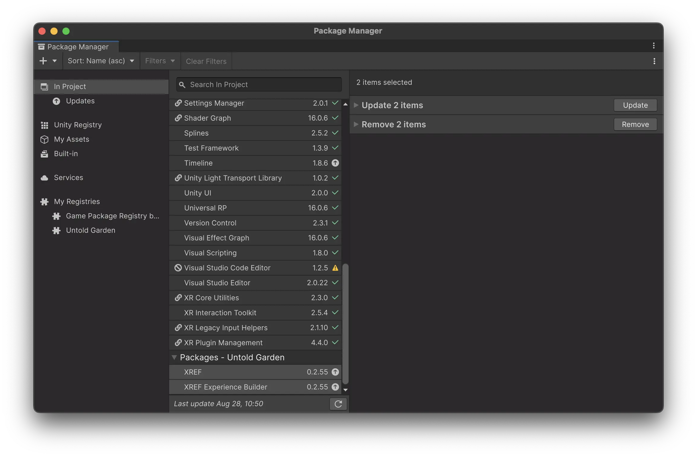

Updating XREF Packages
To ensure you’re using the latest features and improvements in your Meadow experiences, it’s important to keep your XREF packages up to date. Follow these steps to update the XREF and XREF.ExperienceBuilder packages:
- Open Unity and load your project.
- Go to Window > Package Manager to open the Package Manager window.
- In the Package Manager, scroll down the list of packages until you find XREF and XREF.ExperienceBuilder.
- Select both XREF and XREF.ExperienceBuilder by holding Ctrl (Windows) or Cmd (Mac) and clicking on each package.
- With both packages selected, click the “Update” button that appears in the package details pane.

After clicking “Update,” Unity will download and install the latest versions of these packages. Once the update process is complete, you may need to restart Unity to ensure all changes take effect.
Regenerating Visual Scripting Nodes
After updating the XREF packages, it’s crucial to regenerate the visual scripting nodes to access the latest nodes included in the update. Here’s how to do it:
- Go to Edit > Project Settings to open the Project Settings window.
- In the left sidebar, scroll down and select Visual Scripting.
- In the Visual Scripting settings, click on the “Regenerate Nodes” button.
This process will ensure that you have access to all the latest visual scripting nodes provided by the updated XREF packages.
Remember to check for updates regularly and regenerate nodes after each update to take advantage of new features, bug fixes, and performance improvements in the XREF ecosystem.